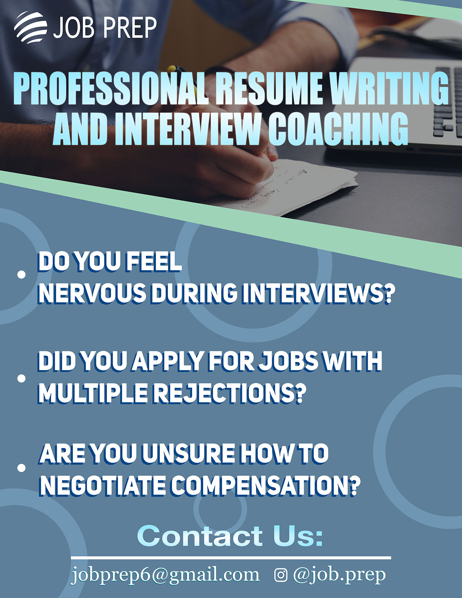

Logos
Click on Image to Read More

This was a design used for The Good Idea Fund's Streat Fest event. A campus wide food festival hosting food sampling from many different countries and cultures. With over 1000 participants, this was a wildly successful experience for the student body and the work here was printed and given out to a large amount of the students who participated.

The Drexel Drag Show is an annual drag show spanning multiple days and featuring local performers and even student performers. The drag show drums up hundreds of students in attendance and is widely popular amongst the community. For the second year in a row I had the privelage of making marketing material to be displayed on shirts and posters and fans that are given to the attendants.

Dragon Hacks is a multi-day long hackathon, where computer science students from across the country come in person or online, to compete in CS competitions. Again this material was used for free t-shirts for participants
A project in my Interactive Digital Media course was to redesign a pre-existing website. I chose a local tavern that I knew could use some reworking. The logo on their website currently is incredibly small and hard to see, so in my redesign, I made a higher resolution version of their logo so it can be used at a larger size for their viewers to recognize!

Boxing was Sigma Phi Epsilon's recruitment theme for fall of 2022. this resulted in me producing flyers, posters, banners, shirts, and social media material, all centered around boxing. This was our Shirt logo that also made an appearance on much of our other materials.
This was a design used for The Good Idea Fund's Streat Fest event. A campus wide food festival hosting food sampling from many different countries and cultures. With over 1000 participants, this was a wildly successful experience for the student body and the work here was printed and given out to a large amount of the students who participated.
Dragon Hacks is a multi-day long hackathon, where computer science students from across the country come in person or online, to compete in CS competitions. Again this material was used for free t-shirts for participants
A project in my Interactive Digital Media course was to redesign a pre-existing website. I chose a local tavern that I knew could use some reworking. The logo on their website currently is incredibly small and hard to see, so in my redesign, I made a higher resolution version of their logo so it can be used at a larger size for their viewers to recognize!
Boxing was Sigma Phi Epsilon's recruitment theme for fall of 2022. this resulted in me producing flyers, posters, banners, shirts, and social media material, all centered around boxing. This was our Shirt logo that also made an appearance on much of our other materials.
Posters

Another Good Idea Fund Project, The first bash is a welcome week event for Drexel University freshman as they get first acclimated to college life. Our theme this past year was a carnival and I did my best to make Drexel themed carnival posters, social media posts, and this year we had tote bags made with a similar design.
Another Good Idea Fund Project, The first bash is a welcome week event for Drexel University freshman as they get first acclimated to college life. Our theme this past year was a carnival and I did my best to make Drexel themed carnival posters, social media posts, and this year we had tote bags made with a similar design.
A personal project I worked on for another student at Drexel for their tutoring business. They wanted posters to help advertise their resume writing/workshop tutoring. This was a change in energy for my work and was a welcoming challenge that I was more than excited to wrok on.

A personal project I worked on for another student at Drexel for their tutoring business. They wanted posters to help advertise their resume writing/workshop tutoring. This was a change in energy for my work and was a welcoming challenge that I was more than excited to wrok on.

The Reflect Roundtable was a mental health event held by Sigma Phi Epsilon along with the Honors College. Students would talk in groups about certain topics that might be stressful or problematic for college students such as readjusting to a new home, meeting new people, getting involved, etc. We did our best to market this event all over campus which again required designs by myself to be made for posters, and social media.
The Reflect Roundtable was a mental health event held by Sigma Phi Epsilon along with the Honors College. Students would talk in groups about certain topics that might be stressful or problematic for college students such as readjusting to a new home, meeting new people, getting involved, etc. We did our best to market this event all over campus which again required designs by myself to be made for posters, and social media.
Similarly to fall recruitment, I was in charge of marketing material for Spring Recruitment of 2022. The group decided on space as their theme and I again made shirts, banners, cards, and other marketing material to promote the organization.

Similarly to fall recruitment, I was in charge of marketing material for Spring Recruitment of 2022. The group decided on space as their theme and I again made shirts, banners, cards, and other marketing material to promote the organization.
Another Good Idea Fund Project, The first bash is a welcome week event for Drexel University freshman as they get first acclimated to college life. Our theme for the 2022 bash was a carnival and I did my best to make Drexel themed carnival posters, social media posts, and this year we had tote bags made with a similar design. This project was a challenge for me as I had to learn how to work/lead with a team of designers as opposed to doing it myself. This helped me develop cooperation skills that helped me provide good results as a team.
A personal project I worked on for another student at Drexel for their tutoring business. They wanted posters to help advertise their resume writing/workshop tutoring. This was a change in energy for my work and was a welcoming challenge that I was more than excited to work on. This gave me the opportunity to try more professional styles as opposed to the more "fun" or "eccentric" stuff I have done such as the first bash or recruitment designs
The Reflect Roundtable was a mental health event held by Sigma Phi Epsilon along with the Honors College. Students would talk in groups about certain topics that might be stressful or problematic for college students such as readjusting to a new home, meeting new people, getting involved, etc. We did our best to market this event all over campus which again required designs by myself to be made for posters, and social media. This was a more fulfilling project as I got to be a part of a mental health initiative that could help a lot of my fellow students.
Similarly to fall recruitment, I was in charge of marketing material for Spring Recruitment of 2022. The group decided on space as their theme and I again made shirts, banners, cards, and other marketing material to promote the organization. This has become a regularly scheduled task for me that I always appreciate. It gives me the opportunity to sharpen my skills and make designs for themes or styles I never tried before.